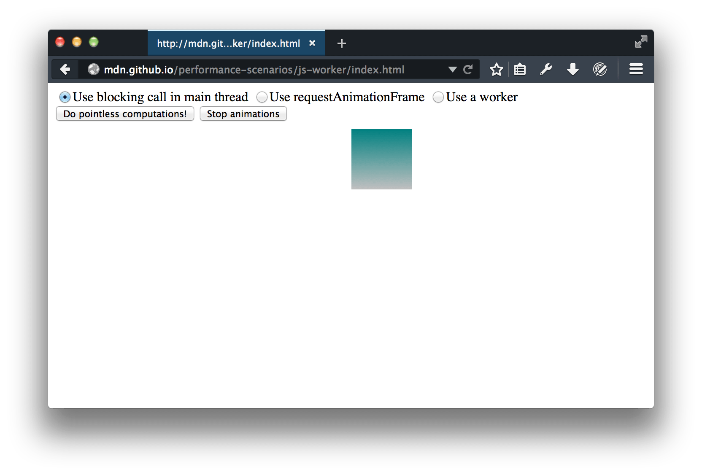
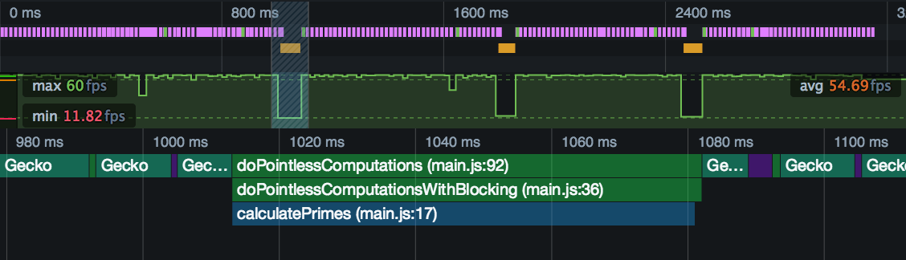
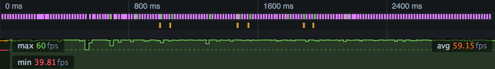

By default the browser uses a single thread to run all the JavaScript in your page as well as to perform layout, reflows, and garbage collection. This means that long-running JavaScript functions can block the thread, leading to an unresponsive page and a bad user experience.
You can use the Frame rate and Waterfall tools to see when JavaScript is causing performance problems, and to single out the particular functions that need attention.
In this article we'll take an example site whose long-running JavaScript causes responsiveness problems, and apply two different approaches to fixing them. The first is to split long-running functions into pieces and use requestAnimationFrame to schedule each piece, and the second is to run the whole function in a separate thread using a web worker.
If you want to play along you can find the demo website here.
There's also a video version of this walkthrough:
{{EmbedYouTube("Pcc6jQX6JDI")}}
The demo website looks like this:
It has three controls:
requestAnimationFrame(), or in another thread using a worker.Leaving the radio button set to "Use blocking call in main thread", make a recording:
Exactly what you see will vary from one machine to another, but it will be something like this:
The top half of this is the waterfall overview. It gives us a compressed view of the Waterfall, which tells us what kinds of operations the browser is doing during the recording. The pink says that we are mostly performing CSS calculations and possibly reflow: this is the CSS animation that's running throughout the profile. Then there are three solid blocks of orange, representing JavaScript execution, one for each time we pressed the button.
The bottom half, which is correlated with the timeline summary in time, shows frame rate. We can see that frame rate is pretty healthy for most of the recording, but collapses completely whenever we press the button.
We can select one of these periods and have a closer look at it in the main Waterfall view:
Here, when we pressed the button, the browser ran a JavaScript function, or series of functions, that blocked the main thread for 71.73ms, or more than four times our frame budget.
Which function, though? By switching to the Flame Chart view we can find out:

This shows us the JS call stack at this point in the execution. At the top of the stack is a function called calculatePrimes(), and we can see its filename and line number. Here's the code, together with its immediate caller:
const iterations = 50;
const multiplier = 1000000000;
function calculatePrimes(iterations, multiplier) {
var primes = [];
for (var i = 0; i < iterations; i++) {
var candidate = i * (multiplier * Math.random());
var isPrime = true;
for (var c = 2; c <= Math.sqrt(candidate); ++c) {
if (candidate % c === 0) {
// not prime
isPrime = false;
break;
}
}
if (isPrime) {
primes.push(candidate);
}
}
return primes;
}
function doPointlessComputationsWithBlocking() {
var primes = calculatePrimes(iterations, multiplier);
pointlessComputationsButton.disabled = false;
console.log(primes);
}
We're just running a (very inefficient) primality test 50 times, for some quite large numbers.
In the first attempt at fixing this, we'll split up the function into a number of much smaller self-contained functions, and schedule each one using requestAnimationFrame().
requestAnimationFrame() tells the browser to run the given function in each frame, just before it performs a repaint. As long as each function is reasonably small, the browser should be able to keep inside its frame budget.
It's pretty simple to split up calculatePrimes(): we will just calculate primality for each number in a separate function:
function doPointlessComputationsWithRequestAnimationFrame() {
function testCandidate(index) {
// finishing condition
if (index == iterations) {
console.log(primes);
pointlessComputationsButton.disabled = false;
return;
}
// test this number
var candidate = index * (multiplier * Math.random());
var isPrime = true;
for (var c = 2; c <= Math.sqrt(candidate); ++c) {
if (candidate % c === 0) {
// not prime
isPrime = false;
break;
}
}
if (isPrime) {
primes.push(candidate);
}
// schedule the next
var testFunction = testCandidate.bind(this, index + 1);
window.requestAnimationFrame(testFunction);
}
var primes = [];
var testFunction = testCandidate.bind(this, 0);
window.requestAnimationFrame(testFunction);
}
Let's test this version out: select the radio button labeled "Use requestAnimationFrame" and capture another profile. This time, the recording should look something like this:
This is exactly what we might have expected to see. Instead of a single solid orange block, each button-press shows up as a long sequence of very short orange blocks. The orange blocks appear one frame apart, and each one represents one of the functions called from requestAnimationFrame(). Note that there are only two button-presses in this profile.
The function calls are interleaved with the pink blocks from the CSS animation, and each function is short enough that the browser can handle it without the overall frame rate dropping.
Using requestAnimationFrame worked to solve the responsiveness problem here, but there are a couple of potential problems with it:
In this version we'll try to fix the problem using a web worker. Web workers enable you to run JavaScript in a separate thread. The main thread and the worker thread can't call each other directly, but communicate using an asynchronous messaging API.
The main thread code would look something like this:
const iterations = 50;
const multiplier = 1000000000;
var worker = new Worker("js/calculate.js");
function doPointlessComputationsInWorker() {
function handleWorkerCompletion(message) {
if (message.data.command == "done") {
pointlessComputationsButton.disabled = false;
console.log(message.data.primes);
worker.removeEventListener("message", handleWorkerCompletion);
}
}
worker.addEventListener("message", handleWorkerCompletion, false);
worker.postMessage({
"multiplier": multiplier,
"iterations": iterations
});
}
The main difference here, compared with the original, is that we need to:
Then we need a new file "calculate.js", that looks like this:
self.addEventListener("message", go);
function go(message) {
var iterations = message.data.iterations;
var multiplier = message.data.multiplier;
primes = calculatePrimes(iterations, multiplier);
self.postMessage({
"command":"done",
"primes": primes
});
}
function calculatePrimes(iterations, multiplier) {
var primes = [];
for (var i = 0; i < iterations; i++) {
var candidate = i * (multiplier * Math.random());
var isPrime = true;
for (var c = 2; c <= Math.sqrt(candidate); ++c) {
if (candidate % c === 0) {
// not prime
isPrime = false;
break;
}
}
if (isPrime) {
primes.push(candidate);
}
}
return primes;
}
In the worker, we have to listen for a message telling us to start, and send a "done" message back when we are done. The code that actually performs the computations is exactly the same as the original code.
So how does this version perform? Switch the radio button to "Use a worker", and capture a new profile. You should see something like this:

In this profile we pushed the button three times. Compared with the original, each button-press is visible in the overview as two very short orange markers:
doPointlessComputationsInWorker() function that handles the click event and starts the worker's processinghandleWorkerCompletion() function that runs when the worker calls "done".In between, the worker runs all the primality tests, and it doesn't seem to have any effect at all on the responsiveness of the main thread. This might seem unlikely, but because workers run in a separate thread, they can take advantage of multi-core processors, which a single-threaded web site can't.
The main limitation of web workers is that DOM APIs are not available to code running in a worker.